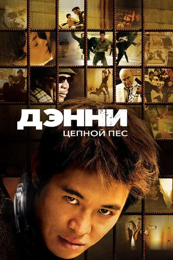

Дэнни Цепной пёс 2005
Дэнни — человек. Он — не собака и вообще не зверь. Но он ходит в ошейнике, спит в ошейнике, ест в ошейнике, почти круглые сутки он проводит в ошейнике. Потому что таким его воспитал Барт, гангстер из Глазго, собиратель долгов, не брезгующий никакими методами при достижении поставленной цели. Когда ему не отдают долг, у него быстро лопается терпение, и тогда Барт снимает с Дэнни ошейник. И Дэнни превращается в собаку, в злобного бультерьера, в адскую смесь жестокого зверя и неудержимого боевого киборга. Нет на свете соперника, равного Дэнни в поединке. Дэнни не знает иной жизни, кроме полусонного существования в ошейнике или смертельной битвы без ошейника. Однажды волею судьбы он оказывается в доме, где живут старый слепой пианист Сэм и его приемная дочь Виктория. Дэнни узнает, что есть иная жизнь, в которой есть чувства, краски, звуки…
Открыть в каталогеДанные и постеры принадлежат их правообладателям. Этот продукт использует TMDB API, но не одобрен и не сертифицирован TMDB.